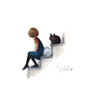

- 网上商城 →
- ☼ 页面架构与交互
- ☼ 数据库设计
- ☼ php后台开发
进行前端页面的设计与交互实现，并利用aptana等软件进行php后台开发的学习，包括Ajax的运行机制，mysql数据库的相关操作，利用CI框架编写php程序等，旨在实现前端与后台的交互。涉及的主要功能有：查询数据，显示数据，购物车，分页等。

- 个人博客 →
- ☼ 网站原型设计
- ☼ 页面架构与交互
- ☼ 响应式设计
使用Axure进行了网站原型的设计，并在此基础上完成了前端页面的架构与交互实现，包括字体的引入，响应式的交互设计，包含了对photoshop、媒体查询、html5和css3的运用等，极大的提升了用户体验效果。